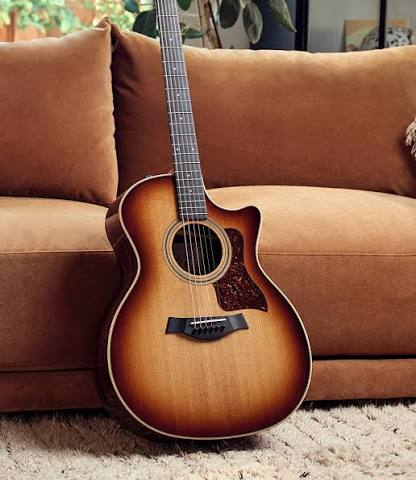
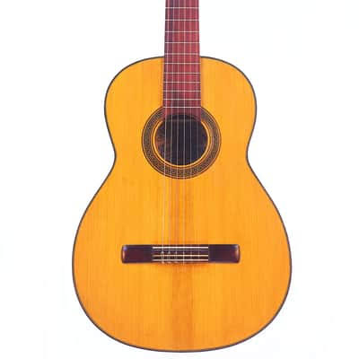
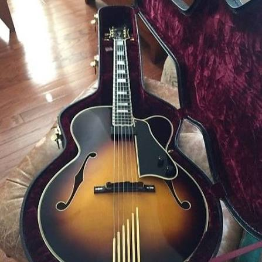

Music instruments are not just tools—they are a way to express feelings that words often cannot.
Among them, the guitar holds a special place because its soft strings and powerful tones can reflect
emotions like happiness, sadness, love, or peace. When someone plays the guitar, it often feels like
they are telling a story from the heart, creating a deep emotional connection with the listener.
This is why the guitar is not just an instrument, but a companion that turns feelings into music.
The guitar is a popular string instrument that is played by strumming or plucking its strings to
produce music. It usually has six strings, a wooden or solid body, and a long neck with frets that
help change the notes. Guitars are used in many styles of music such as rock, pop, classical, and
folk. They come in different types like acoustic and electric, making them suitable for both
beginners and professional musicians. Overall, the guitar is a versatile and easy-to-learn
instrument that is widely loved around the world.
Guitars come in several types, mainly based on how they produce sound and what style of music they
suit. Here’s a clear, beginner-friendly guide 👇
s.no
guitar type
description
image
sound
video
1
Acoustic Guitar
Hollow wooden body that naturally amplifies sound.
Usually has steel strings.
Great for pop, folk, country, rock, and singer-songwriter music.
Ideal for beginners who want a versatile instrument

2
Classical Guitar
Uses soft nylon strings instead of steel.
Wider neck than an acoustic guitar.
Produces a warm, mellow tone.
Commonly used in classical and flamenco music.

3
Electric Guitar
Requires an amplifier to produce sound.
Usually has steel strings.
Popular in rock, metal, jazz, and blues music.
Offers a wide range of sounds and effects.
4
Bass Guitar
Has a longer scale length than a regular guitar.
Usually has four strings, though five and six-string models exist.
Produces deep, low-frequency sounds.
Essential in many genres including rock, pop, jazz, and blues.
5
Archtop Guitar
Features a carved, arched top and back.
Typically has a hollow body that produces a warm, rich tone.
Commonly used in jazz, blues, and other genres requiring a warm sound.
Often has a distinctive aesthetic with a carved sound hole.

6
Lap Steel Guitar
Played horizontally on the lap, not like a regular guitar.
Uses a metal slide (steel bar) instead of fingers on frets.